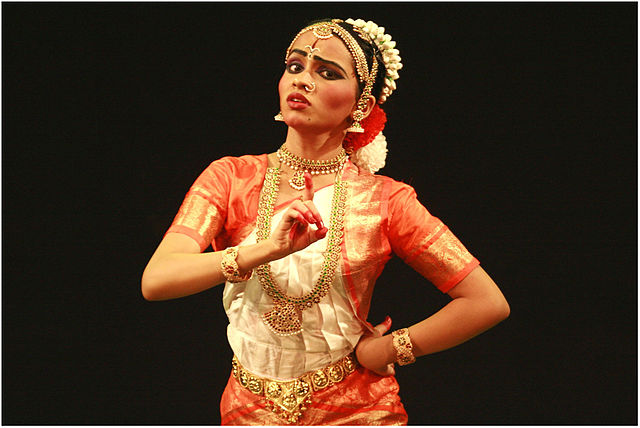
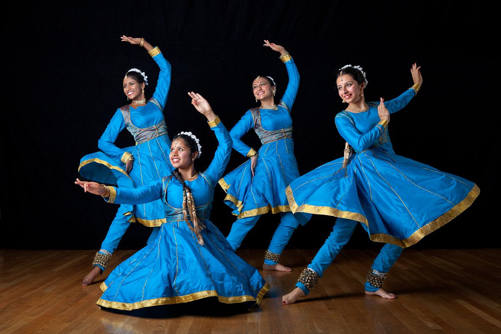
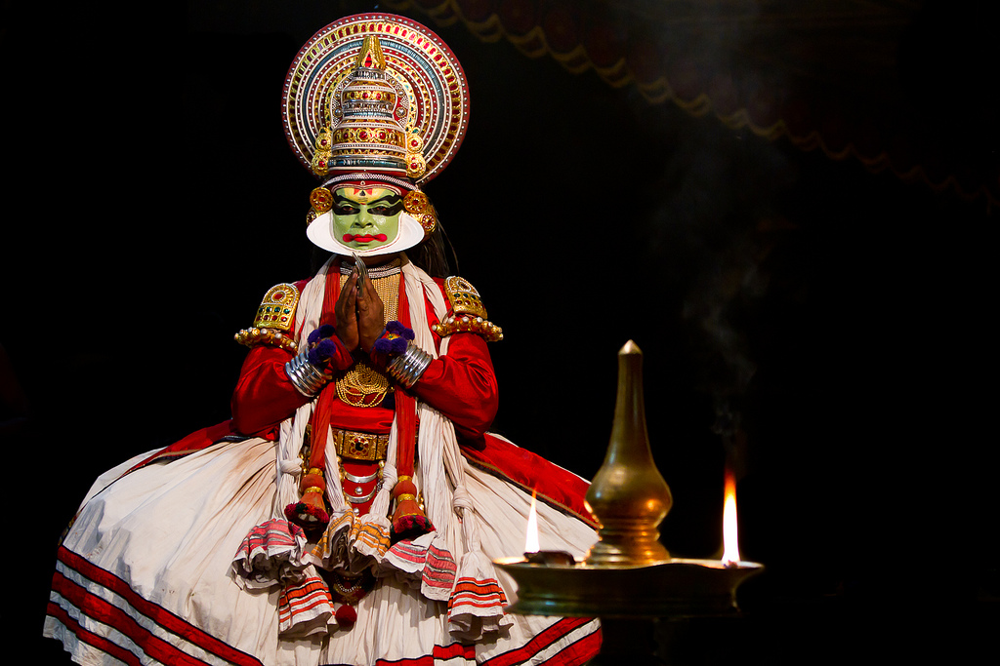
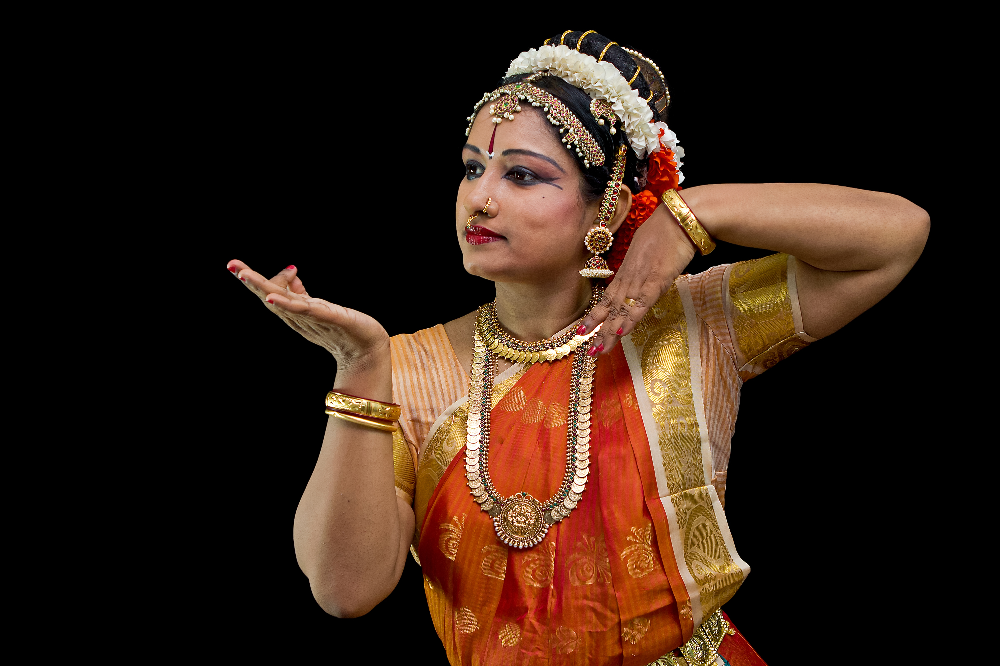
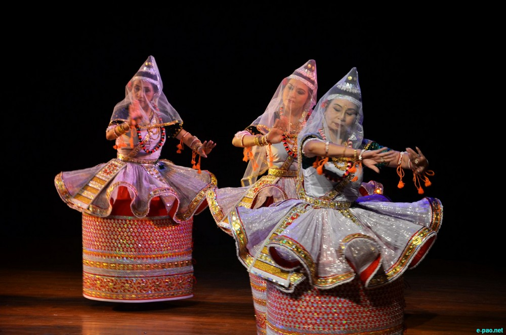
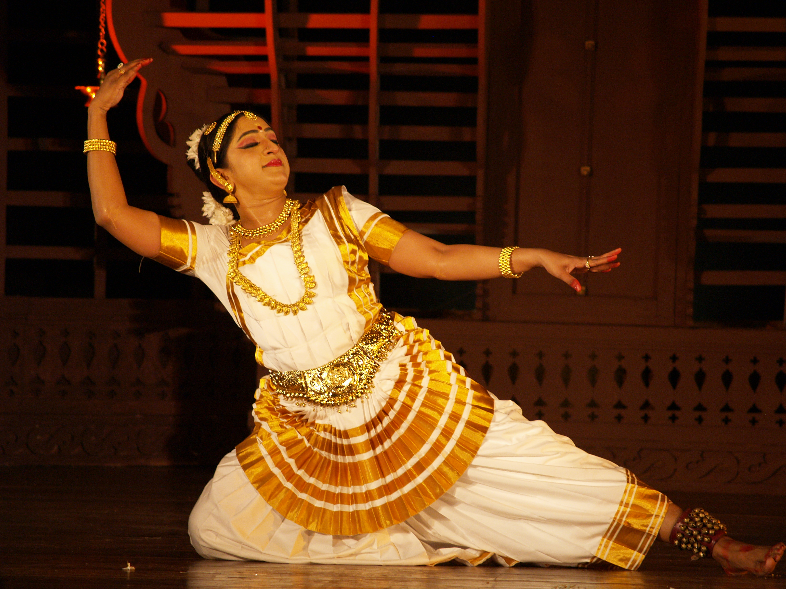
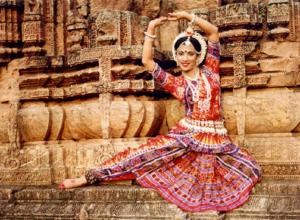

The 8 classical dance styles of India!

BHARATNATYAM
Bharata Natyam (Tamil: பரதநாட்டியம்) (Telugu: భరత నాట్యం),also spelled Bharatanatyam, is a classical Indian dance form that originated in the temples of Tamil Nadu. This dance form denotes various 19th- and 20th-century reconstructions of Sadir, the art of temple dancers called Devadasis
» Read More

KATHAK
Kathak (Hindi: कथक) is one of the eight forms of Indian classical dance. This dance form traces its origins to the nomadic bards of ancient northern India, known as Kathakars or storytellers. Its form today contains traces of temple and ritual dances, and the influence of the bhakti movement
» Read More

KATHAKALI
Kathakali (Malayalam: കഥകളി, kathakaḷi; Sanskrit: कथाकळिः, kathākaḷiḥ) is a stylized classical Indian dance-drama noted for the attractive make-up of characters, elaborate costumes, detailed gestures and well-defined body movements presented in tune with the anchor playback music and complementary percussion
» Read More

Kuchipudi
Kuchipudi /kuːtʃiˈpuːdi/ (Telugu: కూచిపూడి) is a Classical Indian dance from Andhra Pradesh, India. It is also popular all over South India. Kuchipudi is the name of a village in the Divi Taluka of Krishna district that borders the Bay of Bengal and also the surname of the resident Brahmins practicing this traditional dance form, it acquired the present name
» Read More

MANIPURI
Manipur (English pronunciation: Listeni/ˌmənɪpʊr/) is a state in northeastern India, with the city of Imphal as its capital. The state is sometimes referred to by alternative names such as Kangleipak and Meeteileipak.It is bounded by Nagaland to the north, Mizoram to the south, and Assam to the west; Burma lies to its east.
» Read More

MOHINIATTYAM
Mohiniyattam, also spelled Mohiniattam (Malayalam: മോഹിനിയാട്ടം), is a classical dance from Kerala, India. Believed to have originated in 16th century CE, it is one of the eight Indian classical dance forms recognised by the Sangeet Natak Akademi.
» Read More

Odissi
Odissi has origininated from ancient northern India. The name Odissi refers to the dance style of the state of Orissa in eastern India. Like other classical arts of India Oddisi also face difficulties to survive and by the 1930s and 40s, there were very few surviving practitioners of the art.
» Read More
SATTRIYA
Sattras are the Vaishnava monasteries in Assam. The saint poet Shankar Deva of the 15th century AD started this institution to bring harmony to the region of Assam through religion, creating forms of dance-dramas, music, painting and collective prayer.
» Read More